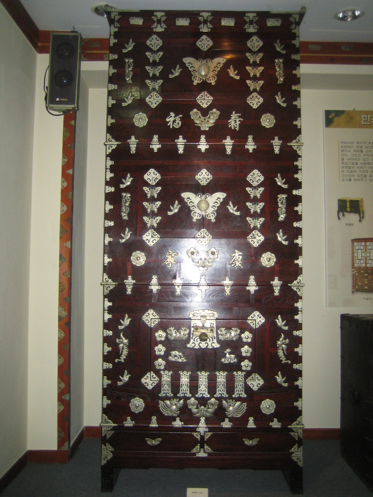
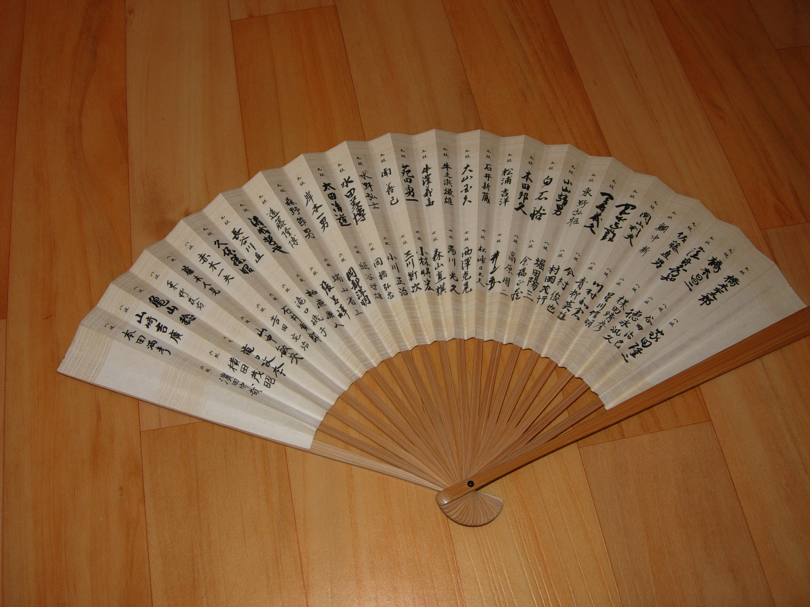
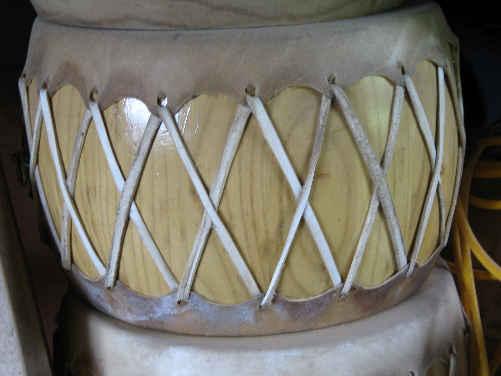

문학 작품 속에 생생하게 살아 숨 쉬는 우리 지역어의 아름다움을 느껴보세요.
"추운데 어서 오이소. 종님이 엄마가 괴어둔 작대기를 걷어 삽짝문을 열었다. 와따, 날씨 한번 억시기 춥네. 히덕스레한 그림자가 마등으로 들어섰다."
"나이 들어 가스께 소리 듣는 것도 지긋지긋허당께. 어여 가시개로 종이나 싹둑 오려보랑께. 날이 추우니 자락이라도 덮어줘야 쓰제."
"혼저옵서예. 이 바당 드릇에 불어오는 바람은 살을 에는 듯하우다. 드릇마농이라도 캐어다가 따뜻한 국이나 끓여 묵읍서."
각 지역의 생활 속 사물을 방언으로 기록합니다


